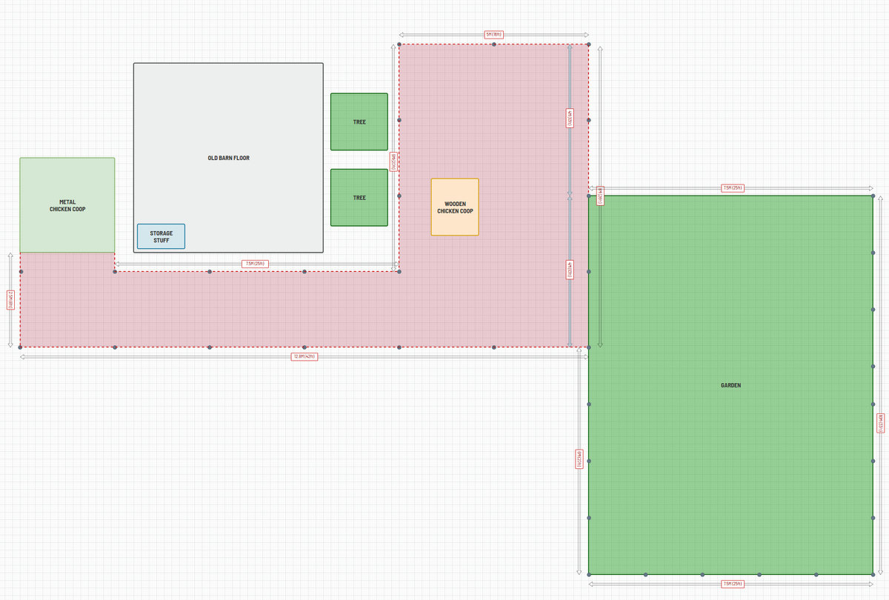
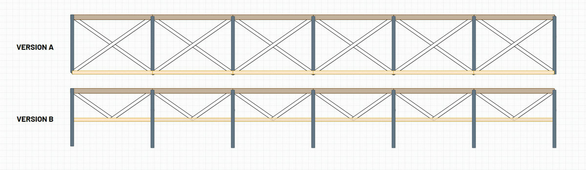
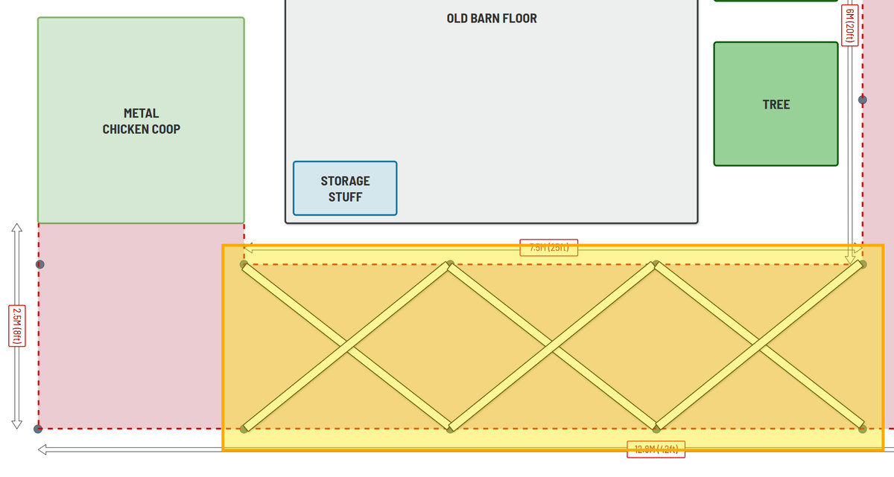
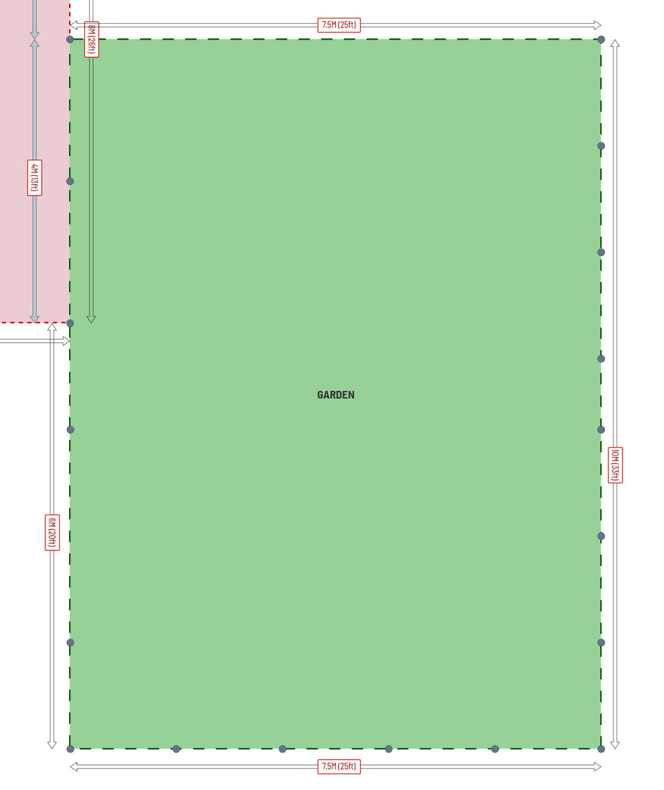
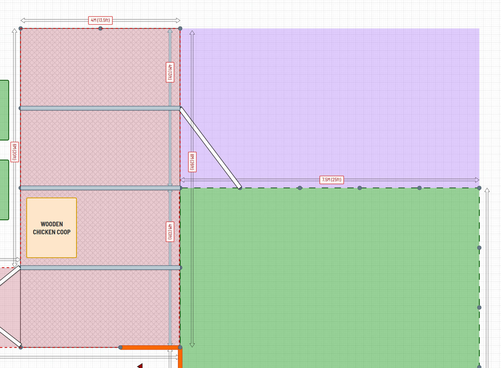

Run (Version A): full X cross-bracing, bottom rail at ground. ½″ galvanized hardware cloth on the bottom ~2 ft of the vertical run and bent outward into a buried 12–18″ L-apron (defeats diggers and weasels/rats that walk through 2×4 mesh); 2″×4″ welded wire above (72″ × 150 ft roll).
Roof: 2″×4″ welded wire over the cross-bars, taut, clipped with j-clips/hog rings every few inches; center support on any span over ~4 ft. Built as removable/openable framed sections (split the 14×14 ft footprint into 2–3), framed in EMT conduit or aluminum angle (not steel); lift-off into L-brackets or hinged; spring-clip the resting position. Lets you clear winter snow load. Rule: a section is open only while someone is standing under it (open roof = hawk access).
Garden (~120 ft perimeter, one 150 ft roll): 2″ hex netting; fold the bottom 6–8″ outward and pin for rabbits/groundhogs. For deer: a two-strand high line (~2 ft and ~5 ft, 18″ apart), monofilament or bailing wire; flag it with tape the first season.
Purple zone: strategic reserve — hold for coop/run expansion if adding birds, otherwise extend the garden into it.
Sourcing: Tractor Supply or Home Depot. Not eBay (shipping). Amazon only with free Prime shipping and a good bulk price.
{kind=link}
{kind=link}
{kind=link}
{kind=link}
{kind=link}